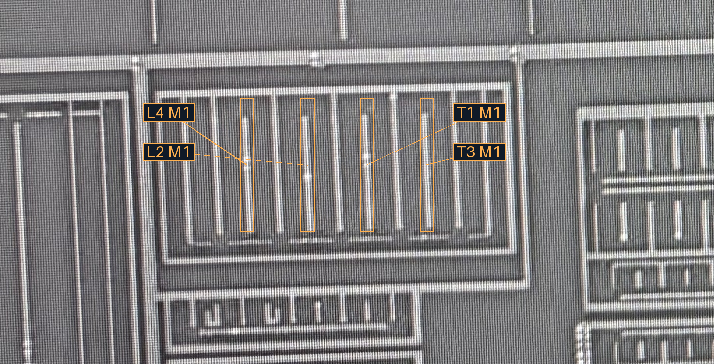
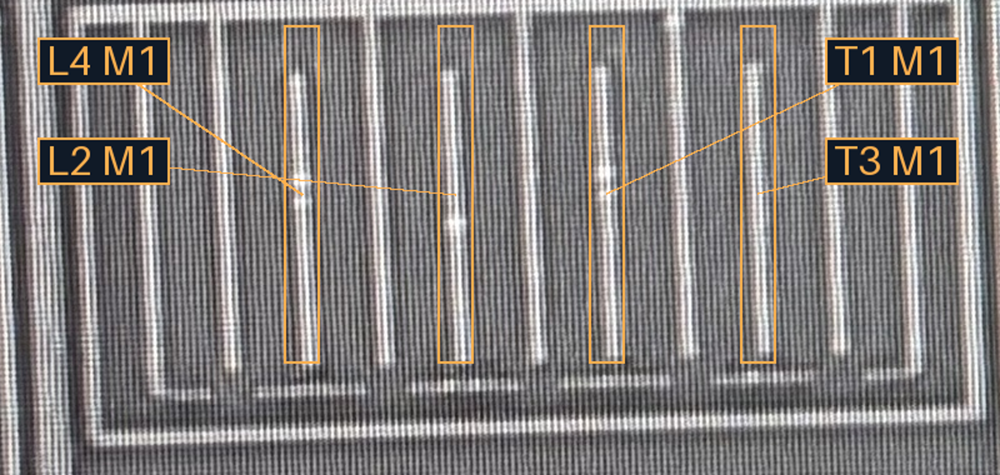

M2阵列宽上下文

M2四倍宽局部

2026-10-23 · 用户结构推断原文 · 结构证据与待核关系
上一轮问题过于聚焦A/B下端直接经V1接M1。本轮把M3横段与邻近M2端部一起纳入，采用你提出的交错结构解释。允许先沿这个假设继续检查，不要求逐孔计数，也不凭空补孔。
| 来源 | 实际可见的结构支持 | 尚不能据此证明 |
|---|---|---|
| M1 | L4、L2、T1、T3四条候选主竖线相邻间距123／121／121原图像素，近似等距 | 各线是否同网、哪条是dummy、每处V1 |
| M2 | R-M2-1／R-M2-3／B脚在较上一排；R-M2-2／A脚在较下一排 | 亮端不是自动检测出的V1／V2；逐接口层对仍需核对 |
| M3 | 两条错开的短横段X／Y，另有下方延伸段Z | X/Y的A/B承载及每个落点；Z不因接近并网 |
B ⋯ V2? ⋯ M3-X? ⋯ V2? ⋯ 邻近M2 R-M2-3? ⋯ V1? ⋯ T1
A ⋯ T3（“直接”路径与M3的关系仍保留原话，不擅自补成详细路径）
仅待澄清一处计数：“T1和左边相隔的四根线”是左侧第4根，还是左侧4根全部？图中L1按T1最近的左邻开始计数，L4是第4根；T3左侧依次为T2、T1、L1、L2，因此L2是T3的左侧第4根。这是物理条带索引，不依此裁决dummy。
若T1指左侧第4根，则暂列B组=L4＋T1，A组=L2＋T3，从左到右为B/A/B/A；它与ABAB交错模式相容。该条件尚未确认，不把两种计数解释混成同一网络。




三层原生照片分开显示，无跨层投影、无新孔形、无自动并网。单图间距与结构一致性不能替代电气连接证据；浏览器交互未实测。